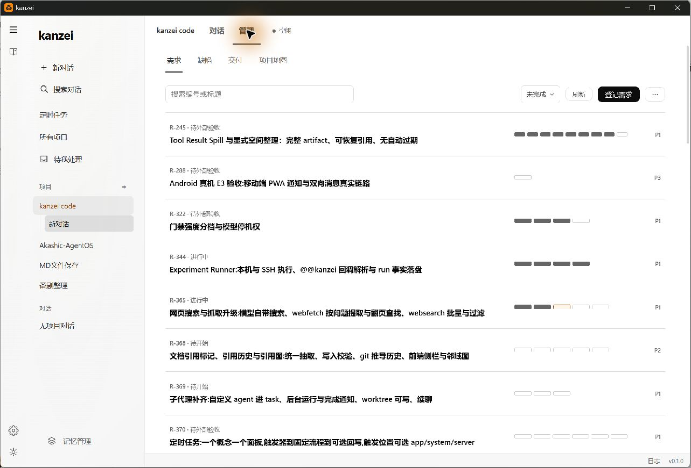
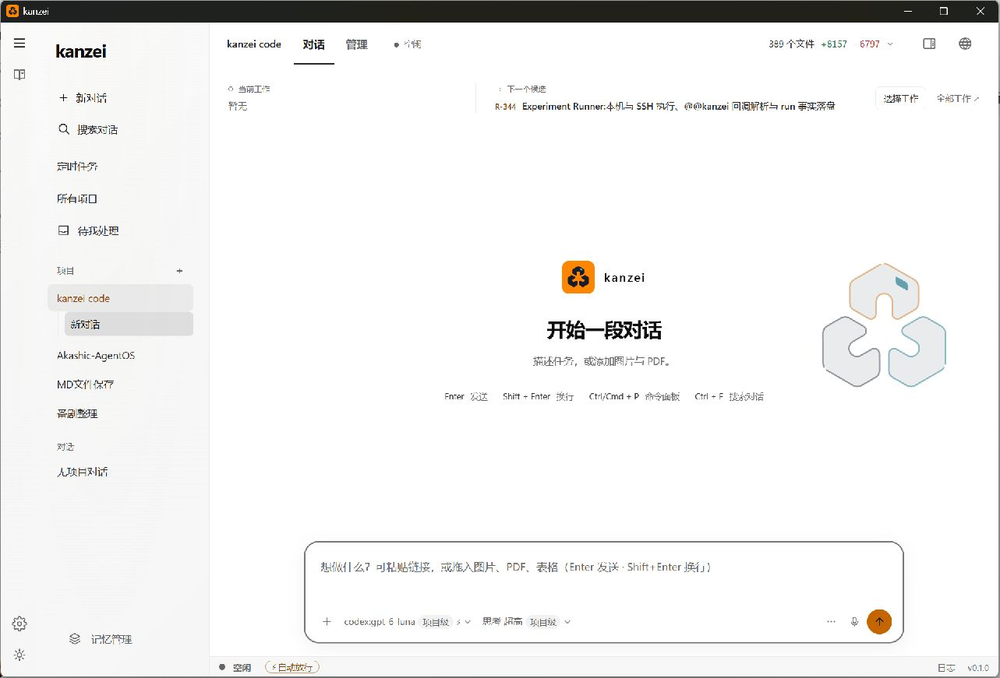
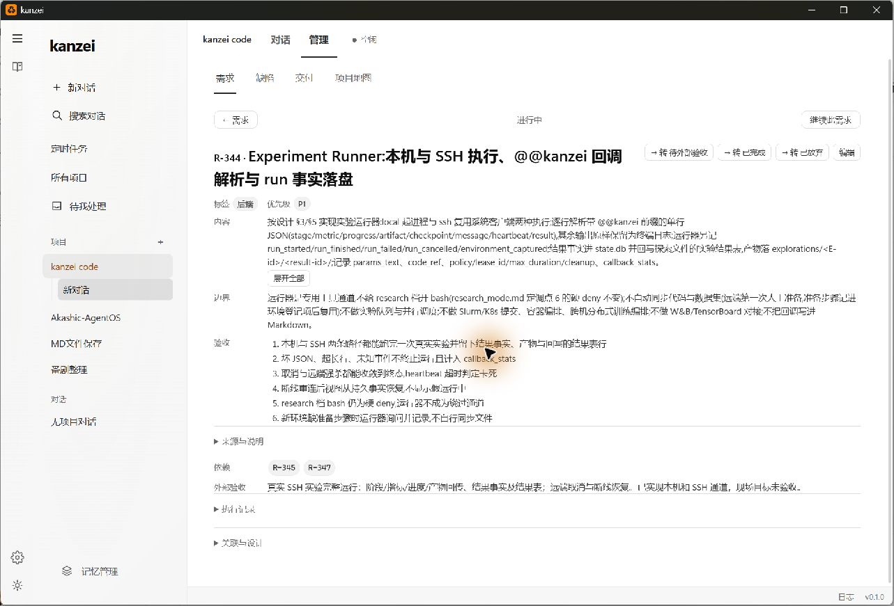
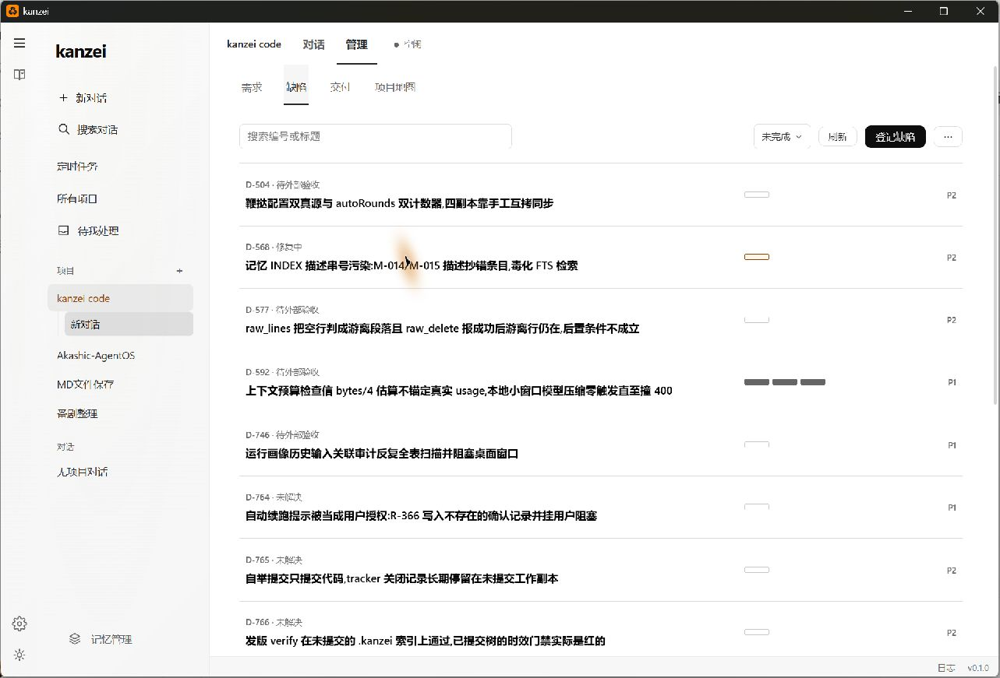
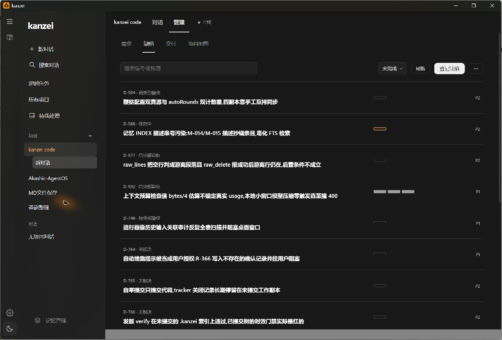
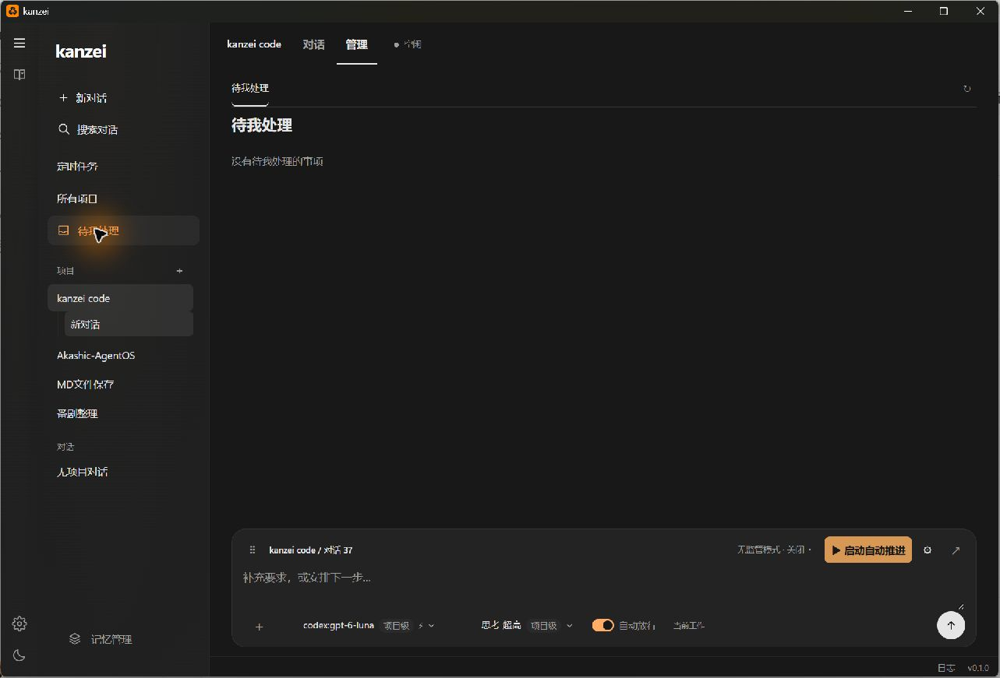
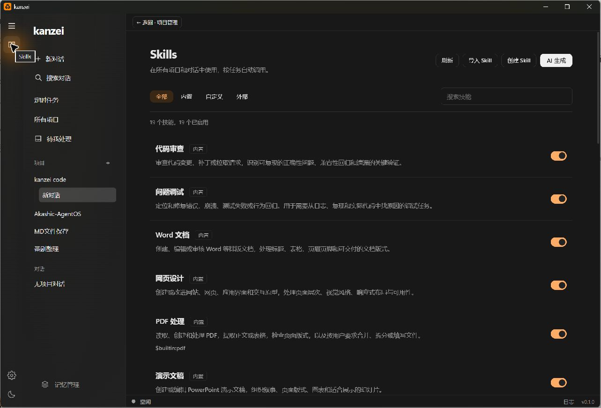
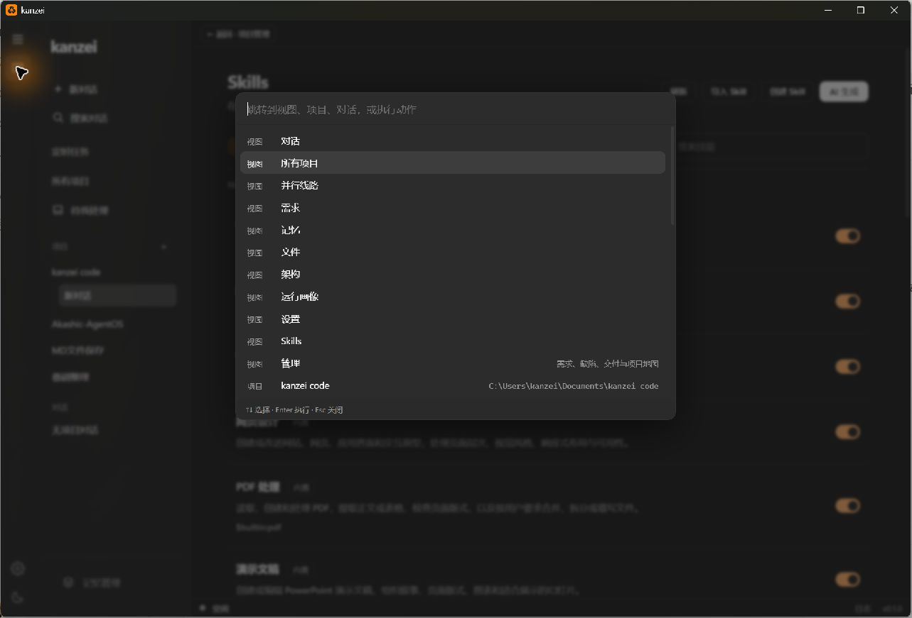

专用于检查 UI、可访问性与交互规范，最贴近本次任务。已读取原始 SKILL.md 及其指定的最新 Web Interface Guidelines，按焦点、语义、空态、文本处理、主题与反馈逐项核查。
局限：偏代码检查，不能代替实际操作；其中 Web 导航 URL 和英文文案规则需按 Tauri 桌面产品适配。
查看本次读取的 skill 快照优先让状态与进度更容易读懂，
再收敛重复强调和跨页面的上下文。
当前中性表面、橙色品牌和独立工作区已有一致方向。最值得改的是：批次进度没有可见数字，整体状态解释不足，紧急度不够突出，以及“待我处理”的全局范围与项目范围叠加。

保留需求列表的简洁结构，把“整体状态”和“批次完成数”明确分开。
查看修改前后与可操作案例点击截图可放大查看原始画面。中性明暗表面、少量品牌色、独立 Skills 管理、原生弹层和按需展开详情。
后台状态是否正确、长时间运行性能、真实读屏播报、未触发的异常和权限流程。
每项都保留证据类型、原始观察、建议和验收条件。
P1 / P2 / P3 是本次设计改进的建议顺序，不等同于已登记的产品缺陷等级。截图中条目的状态和优先级为观察时快照。
延续现有橙、墨蓝、青色体系，用图标、文案和轮廓把状态区分清楚。
深色“失败”和“强调文字”目前同为 #ffad66。保留这一品牌选择时，需要逐组件确保可见的失败字样和独立字形。单纯增加颜色种类，无法解决整体状态、批次进度和下一步动作混在一起的问题。
| 含义 | 建议呈现 | 使用边界 | 当前主题文字对主背景 |
|---|
项目管理 → 需求列表：保留业务状态，改善信息表达。
可以试：切换调整前 / 后、明暗主题、灰度；搜索 R-344；按状态筛选；展开条目；输入不存在的编号后清除筛选。
本案例已实现：批次数字、独立状态列、P0 单次强化、真实外部验收说明、空结果恢复。仅为报告内可运行前端原型，尚未接入产品。
沿用 30-management.js 的列表数据与 batchCells(entry)，把 progressCells 变为“可见文本 + 辅助图形”；在 management-row 中增加明确状态及优先级语义钩子，样式继续归 familiar-workspace.css 管理。
批次数量继续由现有 batch state 推导，整体状态继续来自 entry.status；不根据 100% 批次推断需求完成。外部验收只读现有字段。搜索空结果的“清除筛选”复用当前 query/filter 状态。
需要验证：真实数据含未拆分、superseded、阻塞与未知状态；长标题；明暗主题；800×500 最小桌面尺寸；键盘展开与恢复焦点；不得把本案例的静态数据带进产品。
Windows 原生窗口，安装版 v0.1.0 / b97f8a2e；画面约 1284×872。







原始截图和可访问树文本在 assets/；图中的光晕为捕获时的指针效果，本报告不将其认定为产品装饰或缺陷。运行中的安装版与当前源码版本不同，源码发现均另行标明。
优先复用已存在的能力，并从作者仓库核对外部规则。没有进行全局安装。
专用于检查 UI、可访问性与交互规范，最贴近本次任务。已读取原始 SKILL.md 及其指定的最新 Web Interface Guidelines，按焦点、语义、空态、文本处理、主题与反馈逐项核查。
局限：偏代码检查，不能代替实际操作；其中 Web 导航 URL 和英文文案规则需按 Tauri 桌面产品适配。
查看本次读取的 skill 快照采用其 Apps 规则：安静的表面、可读密度、少颜色、明确主工作区和次级上下文。报告以列表、分隔线和证据为主体，案例沿用项目品牌。
不套用落地页的大幅宣传 hero 或图片要求；工作台应让状态与操作先被看见。
computer-use 操作真实 Windows / WebView2 应用，记录截图和可访问树；Playwright 操作仓库现有模拟 IPC 预览，测量当前源码 DOM 与最终案例。原生事实与模拟数据分开记录。
已核对作者原文。其排版、动作命名、失败与空白状态的规则适合补充质量检查。本次不把强调独特风格的创作流程作为改造现有工作台的主方向。
查看本次读取的 skill 快照选择结论：后续常规 UI 审视可优先使用 Vercel 检查规则 + 真实交互 + 本地 frontend-skill；本次已按这一组合执行。规则正文快照与 SHA256 见 证据索引。
通过了什么、没有验证什么，分别说明。
node scripts/ui-a11y-smoke.mjs 通过。当前源码模拟 IPC 预览测得批次图形无可见文本、边框对比度不足；命令面板源码缺少活动项关联。未把预览中未模拟的 IPC 日志当作产品缺陷。先在案例中比较改前改后，再决定是否把这一处接入产品。